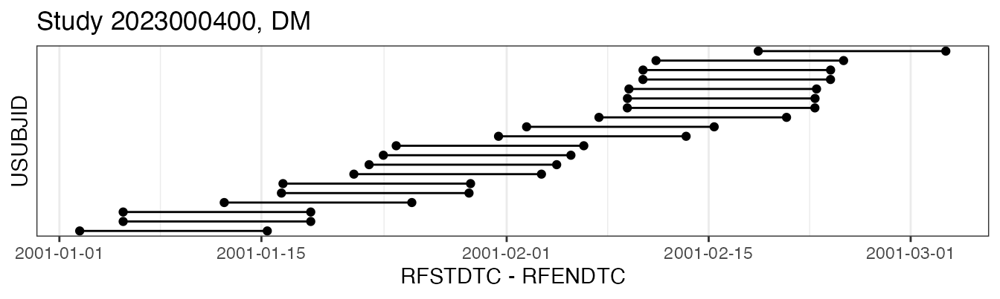
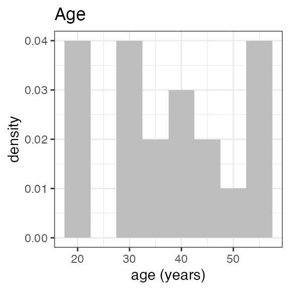
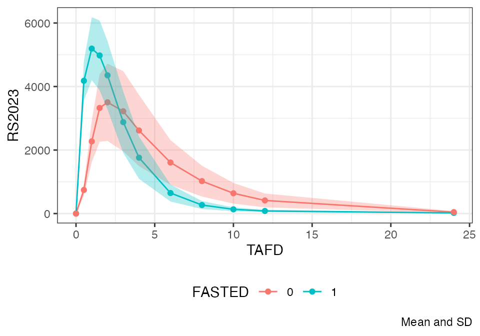

INTRODUCTION
This is a basic tutorial on using the nif package to
create NONMEM Input File (NIF) data sets from Study Data Tabulation
Model- (SDTM) formatted data.
Background
Following regulatory standards, clinical study data are commonly provided in SDTM format, an observation-based data tabulation format in which logically related observations are organized into topical collections (domains). SDTM is defined and maintained by the Clinical Data Interchange Standards Consortium (CDISC).
To support typical pharmacometric analyses, data from different SDTM domains need to be aggregated into a single analysis data set. For example, demographic and pharmacokinetic concentration data from the DM and PC domains are both required to evaluate exposure by age. More complex analyses like population-level PK and PK/PD analyses may include further data, e.g., clinical laboratory, vital sign, or biomarker data.
NONMEM and other modeling software packages expect the input data provided in (long) tabular arrangement with strict requirements to the formatting and nomenclature of the variables (see, e.g., Bauer, CPT Pharmacometrics Syst. Pharmacol. (2019) for an introduction). The input data file for these analyses is sometimes casually referred to as a ‘NONMEM input file’ or ‘NIF file’, hence the name of this package.
Contingent on the downstream analyses, some of the variables in the analysis data set can be easily and automatically derived from the SDTM source data, e.g., ‘DOSE’ (the administered dose) or ‘DV’ (the dependent variable for observations), or demographic covariates like ‘AGE’, ‘SEX’ or ‘RACE’. Other fields of the input data set may require study-specific considerations, for example the calculation of baseline renal or hepatic function categories, definition of specific treatment conditions by study arm, or the encoding of adverse events or concomitant medications, as categorical covariates.
While the latter variables often need manual and study-specific data
programming, the core NIF data set can in most cases be generated in a
quite standardized way. Both approaches are substantially made easier by
the functions that the nif package provides. Often,
analysis data sets can be created with only a handful of lines of
code.
It should be noted that even for basic NIF files, missing data points
or data inconsistencies are challenges that need to be resolved by data
imputation to get to analysis-ready data sets. This is frequently
encountered when analyzing preliminary data from ongoing clinical
studies that have not been fully cleaned yet. The nif
package provides a number of standardized imputation rules to resolve
these issues. More on this point later as well in a separate vignette
(vignette("nif-imputations")).
This package is intended to facilitate the creation of analysis data sets (‘NIF data sets’) from SDTM-formatted clinical data. It also includes a set of functions and tools to support initial exploration of SDTM and NIF data sets.
Outline
The first part of this tutorial describes
how to import SDTM data into a sdtm object, and how to
explore clinical data on the SDTM level.
The second part walks through the
generation of a sample nif data set from SDTM data to
illustrate the general workflow for building analysis data sets.
Finally, the third part showcases some functions to quickly explore analysis data sets.
This tutorial contains live code that depends on the following R packages:
SDTM DATA
Importing SDTM data
In most cases, the source SDTM data are provided as one file per domain, e.g., in SAS binary data base storage format (.sas7bdat) or SAS Transport File (.xpt) format.
With path/to/sdtm/data the location to the source
folder, SDTM data can be loaded using read_sdtm():
read_sdtm("path/to/sdtm/data")Windows users may want to provide the file path as raw string, i.e., in the form of
read_sdtm(r"(path\to\sdtm\data)")to ensure that the backslashes in the file path are correctly captured. Note the inner parentheses around the file path!
If no domains are explicitly specified, the function attempts to load ‘DM’, ‘VS’, ‘EX’ and ‘PC’ as a generic set of SDTM domains suitable to create a basic pharmacokinetic analysis data set.
The return value of this function is a sdtm object.
SDTM objects
sdtm objects are essentially aggregates (lists) of the
SDTM domains from a particular clinical study, plus some metadata. The
easiest way of creating sdtm objects is by importing the
SDTM data using read_sdtm() as shown above.
The nif package includes sample SDTM data sets for
demonstration purposes. These data do not come from actual clinical
studies but are fully synthetic data sets from a fictional single
ascending dose (SAD) study (examplinib_sad), a fictional
food effect (FE) study (examplinib_fe), and a fictional
single-arm proof-of-concept (POC) study with multiple-dose
administrations (examplinib_poc).
The original SDTM data can be retrieved from sdtm
objects by accessing the individual SDTM domains like demonstrated below
for the DM domain of the examplinib_fe data object:
domain(examplinib_sad, "dm") %>%
head(3)
#> SITEID SUBJID ACTARM ACTARMCD RFICDTC
#> 1 101 1010001 Treatment cohort 1, 5 mg examplinib C1 2000-12-21T10:18
#> 2 101 1010002 Treatment cohort 1, 5 mg examplinib C1 2000-12-21T10:30
#> 3 101 1010003 Treatment cohort 1, 5 mg examplinib C1 2000-12-21T09:22
#> RFSTDTC RFXSTDTC STUDYID USUBJID SEX AGE AGEU
#> 1 2000-12-31T10:18 2000-12-31T10:18 2023000001 20230000011010001 M 43 YEARS
#> 2 2000-12-29T10:30 2000-12-29T10:30 2023000001 20230000011010002 M 49 YEARS
#> 3 2000-12-29T09:22 2000-12-29T09:22 2023000001 20230000011010003 M 46 YEARS
#> COUNTRY DOMAIN ARM ARMCD
#> 1 DEU DM Treatment cohort 1, 5 mg examplinib C1
#> 2 DEU DM Treatment cohort 1, 5 mg examplinib C1
#> 3 DEU DM Treatment cohort 1, 5 mg examplinib C1
#> RACE ETHNIC RFENDTC
#> 1 WHITE 2000-12-31T10:18
#> 2 WHITE 2000-12-29T10:30
#> 3 BLACK OR AFRICAN AMERICAN 2000-12-29T09:22Printing an sdtm object shows relevant summary
information:
examplinib_fe
#> -------- SDTM data set summary --------
#> Study 2023000400
#>
#> Data disposition
#> DOMAIN SUBJECTS OBSERVATIONS
#> dm 28 28
#> vs 28 56
#> ex 20 40
#> pc 20 1360
#> lb 28 28
#> pp 20 360
#>
#> Arms (DM):
#> ACTARMCD ACTARM
#> SCRNFAIL Screen Failure
#> BA Fed - Fasted
#> AB Fasted - Fed
#>
#> Treatments (EX):
#> EXAMPLINIB
#>
#> PK sample specimens (PC):
#> PLASMA
#>
#> PK analytes (PC):
#> PCTEST PCTESTCD
#> RS2023 RS2023
#> RS2023487A RS2023487ANote the ‘Treatment-to-analyte mappings’ table in the output, we may get back to this in the context of automatically creating NIF data sets.
High-level subject-level disposition data can be extracted using
subject_info():
examplinib_fe %>%
subject_info("20230004001050001")
#> [,1]
#> SITEID 105
#> SUBJID 1050001
#> ACTARM Fasted - Fed
#> ACTARMCD AB
#> RFICDTC 2000-12-26T10:05
#> RFSTDTC 2001-01-05T10:05
#> RFXSTDTC 2001-01-05T10:05
#> STUDYID 2023000400
#> USUBJID 20230004001050001
#> SEX M
#> AGE 34
#> AGEU YEARS
#> COUNTRY DEU
#> DOMAIN DM
#> ARM Fasted - Fed
#> ARMCD AB
#> RACE BLACK OR AFRICAN AMERICAN
#> ETHNIC
#> RFENDTC 2001-01-18T10:05For a broad-strokes overview on the overall data disposition, it may be informative to look at a timeline view of individual domains, e.g. for DM:
plot(examplinib_fe, "dm")
SDTM suggestions
SDTM data may be incomplete, e.g., when emerging data that have not yet been fully cleaned are analyzed. In addition, some study-specific data may be encoded in a non-standardized way, e.g., information on study parts, cohorts, treatment conditions, etc..
Such data fields may need study-specific considerations and manual
imputations during the creating of the analysis data set. To help
deciding which study-specific factors need to be addressed, the
nif package includes functions to explore the structure of
SDTM data.
As a starting point, suggest() can provide useful
suggestions for the creation of analysis data sets:
suggest(examplinib_fe)
#> 1. There are 1 different treatments in 'EX' (see below).
#> EXTRT
#> ----------
#> EXAMPLINIB
#> Consider adding them to the nif object using `add_administration()`, see the
#> code snippet below (replace 'sdtm' with the name of your sdtm object):
#> ---
#> %>%
#> add_administration(sdtm, 'EXAMPLINIB')
#> ---
#> 2. There are 2 different pharmacokinetic analytes in 'PC':
#> PCTEST PCTESTCD
#> ---------- ----------
#> RS2023 RS2023
#> RS2023487A RS2023487A
#> Consider adding them to the nif object using `add_observation()`. Replace
#> 'sdtm' with the name of your sdtm object and 'y' with the respective
#> treatment code (EXAMPLINIB):
#> ---
#> %>%
#> add_observation(sdtm, 'pc', 'RS2023', parent = 'y') %>%
#> add_observation(sdtm, 'pc', 'RS2023487A', parent = 'y')
#> ---
#> 3. There are 3 arms defined in DM (see below). Consider defining a PART or ARM
#> variable in the nif dataset, filtering for a particular arm, or defining a
#> covariate based on ACTARMCD.
#> ACTARM ACTARMCD
#> -------------- --------
#> Screen Failure SCRNFAIL
#> Fed - Fasted BA
#> Fasted - Fed ABSuggestions 1 and 2 in the above output include code snippets for the
creation of a nif object from this sdtm data set. We will
use this code straight out-of-the box in section [Creating NIF data
sets].
Suggestion 3 notes that the DM domain defines different treatment arms that should probably be included as covariates in the analysis data set because they specify the sequence of fasted and fed administrations in this study. We will deal with this in Study-specific covariates.
NIF DATA SETS
The following sections continue using the examplinib_fe
example to demonstrate how a nif object is created from the
sdtm data object.
Basic NIF file
Based on the analysis needs, nif objects are assembled
in a stepwise manner, starting from an empty nif object,
adding treatment administrations, observations, and covariate fields.
The result is a data table with individual rows for administrations and
observations that follows the naming conventions summarized in Bauer, CPT Pharmacometrics
Syst. Pharmacol. (2019).
The basic nif object automatically includes standard
demographic parameters as subject-level covariates: SEX, AGE and RACE,
and baseline WEIGHT and HEIGHT are taken from the DM and VS domains,
respectively, and merged into the data set as columns of those
names:
sdtm <- examplinib_fe
nif <- new_nif() %>%
add_administration(sdtm, "EXAMPLINIB", analyte = "RS2023") %>%
add_observation(sdtm, "pc", "RS2023")Note that in this SDTM data, the name of the treatment, i.e., the
value of the ‘EXTRT’ field is ‘EXAMPLINIB’ while the pharmacokinetic
analyte name (PCTESTCD) is ‘RS2023’. To harmonize both, the ‘analyte’
parameter in add_administration() was set to ‘RS2023’,
too.
These are the first rows of the resulting data table:
head(nif, 5)
#> REF ID STUDYID USUBJID AGE SEX RACE HEIGHT WEIGHT BMI
#> 1 1 1 2023000400 20230004001010002 53 1 WHITE 180.4 73.1 22.46179
#> 2 2 1 2023000400 20230004001010002 53 1 WHITE 180.4 73.1 22.46179
#> 3 3 1 2023000400 20230004001010002 53 1 WHITE 180.4 73.1 22.46179
#> 4 4 1 2023000400 20230004001010002 53 1 WHITE 180.4 73.1 22.46179
#> 5 5 1 2023000400 20230004001010002 53 1 WHITE 180.4 73.1 22.46179
#> DTC TIME NTIME TAFD TAD EVID AMT ANALYTE CMT PARENT TRTDY
#> 1 2001-01-05 10:05:00 0.0 0 0.0 0.0 1 500 RS2023 1 RS2023 1
#> 2 2001-01-05 10:05:00 0.0 0 0.0 0.0 0 0 RS2023 2 RS2023 1
#> 3 2001-01-05 10:35:00 0.5 NA 0.5 0.5 0 0 RS2023 2 RS2023 1
#> 4 2001-01-05 11:05:00 1.0 NA 1.0 1.0 0 0 RS2023 2 RS2023 1
#> 5 2001-01-05 11:35:00 1.5 NA 1.5 1.5 0 0 RS2023 2 RS2023 1
#> METABOLITE DOSE MDV ACTARMCD IMPUTATION DV
#> 1 FALSE 500 1 AB NA
#> 2 FALSE 500 0 AB 0.000
#> 3 FALSE 500 0 AB 4697.327
#> 4 FALSE 500 0 AB 6325.101
#> 5 FALSE 500 0 AB 6294.187Multiple analytes
To demonstrate how to add multiple analytes to a nif
object, we will temporarily switch to another built-in sample data set,
examplinib_sad. This sdtm object includes
pharmacokinetic concentration data for the M1 metabolite of ‘EXAMPLINIB’
under the PCTESTCD of ‘RS2023487A’. Note how in the below code, the
respective observations are attached to the data set, setting the name
to ‘M1’, and how the relation to the parent compound is established
using the ‘parent’ parameter:
sdtm1 <- examplinib_sad
nif1 <- new_nif() %>%
add_administration(sdtm, "EXAMPLINIB", analyte = "RS2023") %>%
add_observation(sdtm, "pc", "RS2023") %>%
add_observation(sdtm, "pc", "RS2023487A", analyte = "M1", parent = "RS2023")In analogy to PK observations, observations from any SDTM domain,
e.g., LB, VS, MB, TR, etc., can be added in very much the same way.
Please see the documentation to add_observation() for
details. This is a powerful feature that allows effortless construction
of analysis data sets for population PK/PD modeling.
Study-specific covariates
In this study, participants received the test drug, EXAMPLINIB,
fasted or fed in a randomized sequence (see ACTARM and
ACTARMCD in the output of suggest()), where
the ‘EPOCH’ field in ‘EX’ provides information on the current treatment
period. It should be noted that the way such information is encoded in
the SDTM data varies considerably. This is therefore only an example -
the specifics of how covariate information can extracted from a SDTM
data set will differ. However, nif objects are essentially
data frame objects and can thus be easily manipulated, e.g., using
functions from the dplyr package.
The following code shows how in this specific case, covariates relating to the current treatment period (‘PERIOD’) and current treatment (‘TREATMENT’) are sequentially derived and eventually used to create the ‘FASTED’ covariate.
Note that the ‘EPOCH’ field is not carried over from ‘EX’ to the
nif object by default, but needs to be added using the
‘keep’ parameter to add_observation():
nif <- new_nif() %>%
add_administration(sdtm, "EXAMPLINIB", analyte = "RS2023") %>%
add_observation(sdtm, "pc", "RS2023", keep = "EPOCH") %>%
mutate(PERIOD = str_sub(EPOCH, -1, -1)) %>%
mutate(TREATMENT = str_sub(ACTARMCD, PERIOD, PERIOD)) %>%
mutate(FASTED = case_when(TREATMENT == "A" ~ 1, .default = 0)) These are again the first 5 lines:
head(nif, 5)
#> REF ID STUDYID USUBJID AGE SEX RACE HEIGHT WEIGHT BMI
#> 1 1 1 2023000400 20230004001010002 53 1 WHITE 180.4 73.1 22.46179
#> 2 2 1 2023000400 20230004001010002 53 1 WHITE 180.4 73.1 22.46179
#> 3 3 1 2023000400 20230004001010002 53 1 WHITE 180.4 73.1 22.46179
#> 4 4 1 2023000400 20230004001010002 53 1 WHITE 180.4 73.1 22.46179
#> 5 5 1 2023000400 20230004001010002 53 1 WHITE 180.4 73.1 22.46179
#> DTC TIME NTIME TAFD TAD EVID AMT ANALYTE CMT PARENT TRTDY
#> 1 2001-01-05 10:05:00 0.0 0 0.0 0.0 1 500 RS2023 1 RS2023 1
#> 2 2001-01-05 10:05:00 0.0 0 0.0 0.0 0 0 RS2023 2 RS2023 1
#> 3 2001-01-05 10:35:00 0.5 NA 0.5 0.5 0 0 RS2023 2 RS2023 1
#> 4 2001-01-05 11:05:00 1.0 NA 1.0 1.0 0 0 RS2023 2 RS2023 1
#> 5 2001-01-05 11:35:00 1.5 NA 1.5 1.5 0 0 RS2023 2 RS2023 1
#> METABOLITE DOSE MDV ACTARMCD IMPUTATION DV EPOCH
#> 1 FALSE 500 1 AB NA OPEN LABEL TREATMENT 1
#> 2 FALSE 500 0 AB 0.000 OPEN LABEL TREATMENT 1
#> 3 FALSE 500 0 AB 4697.327 OPEN LABEL TREATMENT 1
#> 4 FALSE 500 0 AB 6325.101 OPEN LABEL TREATMENT 1
#> 5 FALSE 500 0 AB 6294.187 OPEN LABEL TREATMENT 1
#> PERIOD TREATMENT FASTED
#> 1 1 A 1
#> 2 1 A 1
#> 3 1 A 1
#> 4 1 A 1
#> 5 1 A 1DATA EXPLORATION
Data disposition
It is generally an excellent idea to explore data sets before
proceeding into more complex analyses. The nif package
provides a host of functions to this end. The following section provides
some basic examples.
The summary() function generates a general overview on
the data disposition in a nif data set:
summary(nif)
#> ----- NONMEM Input Format (NIF) data summary -----
#> Data from 20 subjects across one study:
#> STUDYID N
#> 2023000400 20
#>
#> Sex distribution:
#> SEX N percent
#> male 13 65
#> female 7 35
#>
#> Treatments:
#> RS2023
#>
#> Analytes:
#> RS2023
#>
#> Subjects per dose level:
#> RS2023 N
#> 500 20
#>
#> 680 observations:
#> CMT ANALYTE N
#> 2 RS2023 680
#>
#> Subjects with dose reductions
#> RS2023
#> 2
#>
#> Treatment duration overview:
#> PARENT min max mean median
#> RS2023 2 2 2 2Plotting the summary yields histograms of the baseline demographic
covariates and raw plots of the analytes over time. In the following
code, ignore the ìnvisible(capture.output()) construct
around the plot() function. Its sole purpose is to omit
some non-graphical output:



#> Warning in transformation$transform(x): NaNs produced
#> Warning in ggplot2::scale_y_log10(): log-10 transformation
#> introduced infinite values.Plasma concentration data
nif objects can be easily plotted as time series charts
using the generic plot() function. While the output is a
standard ggplot2 object that can be further extended using ggplot2
functionality, the plot() function itself includes
extensive parameters to achieve the desired data visualization.
In its simplest form, plot() includes all analytes, and
uses ‘time after first dose’ (‘TAFD’) as the time metric:
plot(nif)
To check the integrity of the data set, if often helps to plot the analyte concentrations over time-after-dose (TAD):

To demonstrate the food effect on Cmax and Tmax on the individual level, the below figure focuses on the first 24 hours on the linear scale and introduces coloring based on the ‘FASTED’ covariate field:
The following compares the mean plasma concentration profiles:
nif %>%
plot(color="FASTED", max_time=24, mean=TRUE, points=TRUE)
#> `geom_line()`: Each group consists of only one observation.
#> ℹ Do you need to adjust the group aesthetic?
Refer to the documentation (?plot.nif()) for further
options.
NIF viewer
nif_viewer() is a powerful exploratory tool that lets
you interactively explore all analyte profiles on an individual level.
As the static nature of a vignette does not allow to fully appreciate
its potential, you are encouraged to test nif_viewer()
within your RStudio.
nif_viewer(nif)